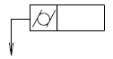

Zylindrische Formtoleranzen nach IT-Grad
Zahlenquelle noch nicht vollständig gegen die aktuelle Norm geprüft. Ausgangswerte bleiben erhalten; nicht als bestätigte Grenzmaße verwenden.

Zylindrische Formtoleranzen nach IT-Grad · IT4 A [µm] – IT5 C [µm] · —–2500 mm
| Über [mm] | Bis einschließlich [mm] | IT4 A [µm] | IT4 B [µm] | IT4 C [µm] | IT5 A [µm] | IT5 B [µm] | IT5 C [µm] |
|---|---|---|---|---|---|---|---|
| — | 3 | 0,8 | 0,5 | 0,3 | 1,2 | 0,8 | 0,5 |
| 3 | 6 | 1 | 0,6 | 0,4 | 1,6 | 1 | 0,6 |
| 6 | 10 | 1 | 0,6 | 0,4 | 1,6 | 1 | 0,6 |
| 10 | 18 | 1,2 | 0,8 | 0,5 | 2 | 1,2 | 0,8 |
| 18 | 30 | 1,6 | 1 | 0,6 | 2,5 | 1,6 | 1 |
| 30 | 50 | 2 | 1,2 | 0,8 | 3 | 2 | 1,2 |
| 50 | 80 | 2,5 | 1,6 | 1 | 4 | 2,5 | 1,6 |
| 80 | 120 | 2,5 | 1,6 | 1 | 4 | 2,5 | 1,6 |
| 120 | 180 | 3 | 2 | 1,2 | 5 | 3 | 2 |
| 180 | 250 | 3 | 2 | 1,2 | 5 | 3 | 2 |
| 250 | 315 | 4 | 2,5 | 1,6 | 6 | 4 | 2,5 |
| 315 | 400 | 4 | 2,5 | 1,6 | 6 | 4 | 2,5 |
| 400 | 500 | 5 | 3 | 2 | 8 | 5 | 3 |
| 500 | 630 | 5 | 3 | 2 | 8 | 5 | 3 |
| 630 | 800 | 6 | 4 | 2,5 | 10 | 6 | 4 |
| 800 | 1000 | 6 | 4 | 2,5 | 10 | 6 | 4 |
| 1000 | 1250 | 8 | 5 | 3 | 12 | 8 | 5 |
| 1250 | 1600 | 8 | 5 | 3 | 12 | 8 | 5 |
| 1600 | 2000 | 10 | 6 | 4 | 16 | 10 | 6 |
| 2000 | 2500 | 10 | 6 | 4 | 16 | 10 | 6 |
Zylindrische Formtoleranzen nach IT-Grad · IT6 A [µm] – IT7 C [µm] · —–2500 mm
| Über [mm] | Bis einschließlich [mm] | IT6 A [µm] | IT6 B [µm] | IT6 C [µm] | IT7 A [µm] | IT7 B [µm] | IT7 C [µm] |
|---|---|---|---|---|---|---|---|
| — | 3 | 2 | 1,2 | 0,8 | 3 | 2 | 1,2 |
| 3 | 6 | 2,5 | 1,6 | 1 | 4 | 2,5 | 1,6 |
| 6 | 10 | 2,5 | 1,6 | 1 | 4 | 2,5 | 1,6 |
| 10 | 18 | 3 | 2 | 1,2 | 5 | 3 | 2 |
| 18 | 30 | 4 | 2,5 | 1,6 | 6 | 4 | 2,5 |
| 30 | 50 | 5 | 3 | 2 | 8 | 5 | 3 |
| 50 | 80 | 6 | 4 | 2,5 | 10 | 6 | 4 |
| 80 | 120 | 6 | 4 | 2,5 | 10 | 6 | 4 |
| 120 | 180 | 8 | 5 | 3 | 12 | 8 | 5 |
| 180 | 250 | 8 | 5 | 3 | 12 | 8 | 5 |
| 250 | 315 | 10 | 6 | 4 | 16 | 10 | 6 |
| 315 | 400 | 10 | 6 | 4 | 16 | 10 | 6 |
| 400 | 500 | 12 | 8 | 5 | 20 | 12 | 8 |
| 500 | 630 | 12 | 8 | 5 | 20 | 12 | 8 |
| 630 | 800 | 16 | 10 | 6 | 25 | 16 | 10 |
| 800 | 1000 | 16 | 10 | 6 | 25 | 16 | 10 |
| 1000 | 1250 | 20 | 12 | 8 | 30 | 20 | 12 |
| 1250 | 1600 | 20 | 12 | 8 | 30 | 20 | 12 |
| 1600 | 2000 | 25 | 16 | 10 | 40 | 25 | 16 |
| 2000 | 2500 | 25 | 16 | 10 | 40 | 25 | 16 |
Zylindrische Formtoleranzen nach IT-Grad · IT8 A [µm] – IT8 C [µm] · —–2500 mm
| Über [mm] | Bis einschließlich [mm] | IT8 A [µm] | IT8 B [µm] | IT8 C [µm] |
|---|---|---|---|---|
| — | 3 | 5 | 3 | 2 |
| 3 | 6 | 6 | 4 | 2,5 |
| 6 | 10 | 6 | 4 | 2,5 |
| 10 | 18 | 8 | 5 | 3 |
| 18 | 30 | 10 | 6 | 4 |
| 30 | 50 | 12 | 8 | 5 |
| 50 | 80 | 16 | 10 | 6 |
| 80 | 120 | 16 | 10 | 6 |
| 120 | 180 | 20 | 12 | 8 |
| 180 | 250 | 20 | 12 | 8 |
| 250 | 315 | 25 | 16 | 10 |
| 315 | 400 | 25 | 16 | 10 |
| 400 | 500 | 30 | 20 | 12 |
| 500 | 630 | 30 | 20 | 12 |
| 630 | 800 | 40 | 25 | 16 |
| 800 | 1000 | 40 | 25 | 16 |
| 1000 | 1250 | 50 | 30 | 20 |
| 1250 | 1600 | 50 | 30 | 20 |
| 1600 | 2000 | 60 | 40 | 30 |
| 2000 | 2500 | 60 | 40 | 30 |
Zylindrische Formtoleranzen nach IT-Grad · IT9 A [µm] – IT10 C [µm] · —–2500 mm
| Über [mm] | Bis einschließlich [mm] | IT9 A [µm] | IT9 B [µm] | IT9 C [µm] | IT10 A [µm] | IT10 B [µm] | IT10 C [µm] |
|---|---|---|---|---|---|---|---|
| — | 3 | 8 | 5 | 3 | 12 | 8 | 5 |
| 3 | 6 | 10 | 6 | 4 | 16 | 10 | 6 |
| 6 | 10 | 10 | 6 | 4 | 16 | 10 | 6 |
| 10 | 18 | 12 | 8 | 5 | 20 | 12 | 8 |
| 18 | 30 | 16 | 10 | 6 | 25 | 16 | 10 |
| 30 | 50 | 20 | 12 | 8 | 30 | 20 | 12 |
| 50 | 80 | 25 | 16 | 10 | 40 | 25 | 16 |
| 80 | 120 | 25 | 16 | 10 | 40 | 25 | 16 |
| 120 | 180 | 30 | 20 | 12 | 50 | 30 | 20 |
| 180 | 250 | 30 | 20 | 12 | 50 | 30 | 20 |
| 250 | 315 | 40 | 25 | 16 | 60 | 40 | 25 |
| 315 | 400 | 40 | 25 | 16 | 60 | 40 | 25 |
| 400 | 500 | 50 | 30 | 20 | 80 | 50 | 30 |
| 500 | 630 | 50 | 30 | 20 | 80 | 50 | 30 |
| 630 | 800 | 60 | 40 | 25 | 100 | 60 | 40 |
| 800 | 1000 | 60 | 40 | 25 | 100 | 60 | 40 |
| 1000 | 1250 | 80 | 50 | 30 | 120 | 80 | 50 |
| 1250 | 1600 | 80 | 50 | 30 | 120 | 80 | 50 |
| 1600 | 2000 | 100 | 60 | 40 | 160 | 100 | 60 |
| 2000 | 2500 | 100 | 60 | 40 | 160 | 100 | 60 |
Zylindrische Formtoleranzen nach IT-Grad · IT11 A [µm] – IT12 C [µm] · —–2500 mm
| Über [mm] | Bis einschließlich [mm] | IT11 A [µm] | IT11 B [µm] | IT11 C [µm] | IT12 A [µm] | IT12 B [µm] | IT12 C [µm] |
|---|---|---|---|---|---|---|---|
| — | 3 | 20 | 12 | 8 | 30 | 20 | 12 |
| 3 | 6 | 25 | 16 | 10 | 40 | 25 | 16 |
| 6 | 10 | 25 | 16 | 10 | 40 | 25 | 16 |
| 10 | 18 | 30 | 20 | 12 | 50 | 30 | 20 |
| 18 | 30 | 40 | 25 | 16 | 60 | 40 | 25 |
| 30 | 50 | 50 | 30 | 20 | 80 | 50 | 30 |
| 50 | 80 | 60 | 40 | 25 | 100 | 60 | 40 |
| 80 | 120 | 60 | 40 | 25 | 100 | 60 | 40 |
| 120 | 180 | 80 | 50 | 30 | 120 | 80 | 50 |
| 180 | 250 | 80 | 50 | 30 | 120 | 80 | 50 |
| 250 | 315 | 100 | 60 | 40 | 160 | 100 | 60 |
| 315 | 400 | 100 | 60 | 40 | 160 | 100 | 60 |
| 400 | 500 | 120 | 80 | 50 | 200 | 120 | 80 |
| 500 | 630 | 120 | 80 | 50 | 200 | 120 | 80 |
| 630 | 800 | 160 | 100 | 60 | 250 | 160 | 100 |
| 800 | 1000 | 160 | 100 | 60 | 250 | 160 | 100 |
| 1000 | 1250 | 200 | 120 | 80 | 300 | 200 | 120 |
| 1250 | 1600 | 200 | 120 | 80 | 300 | 200 | 120 |
| 1600 | 2000 | 250 | 160 | 100 | 400 | 250 | 160 |
| 2000 | 2500 | 250 | 160 | 100 | 400 | 250 | 160 |
Zylindrische Formtoleranzen nach IT-Grad · IT4 A [µm] – IT5 C [µm] · —–2500 mm
| Über [mm] | Bis einschließlich [mm] | IT4 A [µm] | IT4 B [µm] | IT4 C [µm] | IT5 A [µm] | IT5 B [µm] |
|---|---|---|---|---|---|---|
| — | 3 | 0,8 | 0,5 | 0,3 | 1,2 | 0,8 |
| 3 | 6 | 1 | 0,6 | 0,4 | 1,6 | 1 |
| 6 | 10 | 1 | 0,6 | 0,4 | 1,6 | 1 |
| 10 | 18 | 1,2 | 0,8 | 0,5 | 2 | 1,2 |
| 18 | 30 | 1,6 | 1 | 0,6 | 2,5 | 1,6 |
| 30 | 50 | 2 | 1,2 | 0,8 | 3 | 2 |
| 50 | 80 | 2,5 | 1,6 | 1 | 4 | 2,5 |
| 80 | 120 | 2,5 | 1,6 | 1 | 4 | 2,5 |
| 120 | 180 | 3 | 2 | 1,2 | 5 | 3 |
| 180 | 250 | 3 | 2 | 1,2 | 5 | 3 |
| 250 | 315 | 4 | 2,5 | 1,6 | 6 | 4 |
| 315 | 400 | 4 | 2,5 | 1,6 | 6 | 4 |
| 400 | 500 | 5 | 3 | 2 | 8 | 5 |
| 500 | 630 | 5 | 3 | 2 | 8 | 5 |
| 630 | 800 | 6 | 4 | 2,5 | 10 | 6 |
| 800 | 1000 | 6 | 4 | 2,5 | 10 | 6 |
| 1000 | 1250 | 8 | 5 | 3 | 12 | 8 |
| 1250 | 1600 | 8 | 5 | 3 | 12 | 8 |
| 1600 | 2000 | 10 | 6 | 4 | 16 | 10 |
| 2000 | 2500 | 10 | 6 | 4 | 16 | 10 |
Zylindrische Formtoleranzen nach IT-Grad · IT4 A [µm] – IT5 C [µm] · —–2500 mm
| Über [mm] | IT5 C [µm] |
|---|---|
| — | 0,5 |
| 3 | 0,6 |
| 6 | 0,6 |
| 10 | 0,8 |
| 18 | 1 |
| 30 | 1,2 |
| 50 | 1,6 |
| 80 | 1,6 |
| 120 | 2 |
| 180 | 2 |
| 250 | 2,5 |
| 315 | 2,5 |
| 400 | 3 |
| 500 | 3 |
| 630 | 4 |
| 800 | 4 |
| 1000 | 5 |
| 1250 | 5 |
| 1600 | 6 |
| 2000 | 6 |
Zylindrische Formtoleranzen nach IT-Grad · IT6 A [µm] – IT7 C [µm] · —–2500 mm
| Über [mm] | Bis einschließlich [mm] | IT6 A [µm] | IT6 B [µm] | IT6 C [µm] | IT7 A [µm] | IT7 B [µm] |
|---|---|---|---|---|---|---|
| — | 3 | 2 | 1,2 | 0,8 | 3 | 2 |
| 3 | 6 | 2,5 | 1,6 | 1 | 4 | 2,5 |
| 6 | 10 | 2,5 | 1,6 | 1 | 4 | 2,5 |
| 10 | 18 | 3 | 2 | 1,2 | 5 | 3 |
| 18 | 30 | 4 | 2,5 | 1,6 | 6 | 4 |
| 30 | 50 | 5 | 3 | 2 | 8 | 5 |
| 50 | 80 | 6 | 4 | 2,5 | 10 | 6 |
| 80 | 120 | 6 | 4 | 2,5 | 10 | 6 |
| 120 | 180 | 8 | 5 | 3 | 12 | 8 |
| 180 | 250 | 8 | 5 | 3 | 12 | 8 |
| 250 | 315 | 10 | 6 | 4 | 16 | 10 |
| 315 | 400 | 10 | 6 | 4 | 16 | 10 |
| 400 | 500 | 12 | 8 | 5 | 20 | 12 |
| 500 | 630 | 12 | 8 | 5 | 20 | 12 |
| 630 | 800 | 16 | 10 | 6 | 25 | 16 |
| 800 | 1000 | 16 | 10 | 6 | 25 | 16 |
| 1000 | 1250 | 20 | 12 | 8 | 30 | 20 |
| 1250 | 1600 | 20 | 12 | 8 | 30 | 20 |
| 1600 | 2000 | 25 | 16 | 10 | 40 | 25 |
| 2000 | 2500 | 25 | 16 | 10 | 40 | 25 |
Zylindrische Formtoleranzen nach IT-Grad · IT6 A [µm] – IT7 C [µm] · —–2500 mm
| Über [mm] | IT7 C [µm] |
|---|---|
| — | 1,2 |
| 3 | 1,6 |
| 6 | 1,6 |
| 10 | 2 |
| 18 | 2,5 |
| 30 | 3 |
| 50 | 4 |
| 80 | 4 |
| 120 | 5 |
| 180 | 5 |
| 250 | 6 |
| 315 | 6 |
| 400 | 8 |
| 500 | 8 |
| 630 | 10 |
| 800 | 10 |
| 1000 | 12 |
| 1250 | 12 |
| 1600 | 16 |
| 2000 | 16 |
Zylindrische Formtoleranzen nach IT-Grad · IT8 A [µm] – IT8 C [µm] · —–2500 mm
| Über [mm] | Bis einschließlich [mm] | IT8 A [µm] | IT8 B [µm] | IT8 C [µm] |
|---|---|---|---|---|
| — | 3 | 5 | 3 | 2 |
| 3 | 6 | 6 | 4 | 2,5 |
| 6 | 10 | 6 | 4 | 2,5 |
| 10 | 18 | 8 | 5 | 3 |
| 18 | 30 | 10 | 6 | 4 |
| 30 | 50 | 12 | 8 | 5 |
| 50 | 80 | 16 | 10 | 6 |
| 80 | 120 | 16 | 10 | 6 |
| 120 | 180 | 20 | 12 | 8 |
| 180 | 250 | 20 | 12 | 8 |
| 250 | 315 | 25 | 16 | 10 |
| 315 | 400 | 25 | 16 | 10 |
| 400 | 500 | 30 | 20 | 12 |
| 500 | 630 | 30 | 20 | 12 |
| 630 | 800 | 40 | 25 | 16 |
| 800 | 1000 | 40 | 25 | 16 |
| 1000 | 1250 | 50 | 30 | 20 |
| 1250 | 1600 | 50 | 30 | 20 |
| 1600 | 2000 | 60 | 40 | 30 |
| 2000 | 2500 | 60 | 40 | 30 |
Zylindrische Formtoleranzen nach IT-Grad · IT9 A [µm] – IT10 C [µm] · —–2500 mm
| Über [mm] | Bis einschließlich [mm] | IT9 A [µm] | IT9 B [µm] | IT9 C [µm] | IT10 A [µm] | IT10 B [µm] |
|---|---|---|---|---|---|---|
| — | 3 | 8 | 5 | 3 | 12 | 8 |
| 3 | 6 | 10 | 6 | 4 | 16 | 10 |
| 6 | 10 | 10 | 6 | 4 | 16 | 10 |
| 10 | 18 | 12 | 8 | 5 | 20 | 12 |
| 18 | 30 | 16 | 10 | 6 | 25 | 16 |
| 30 | 50 | 20 | 12 | 8 | 30 | 20 |
| 50 | 80 | 25 | 16 | 10 | 40 | 25 |
| 80 | 120 | 25 | 16 | 10 | 40 | 25 |
| 120 | 180 | 30 | 20 | 12 | 50 | 30 |
| 180 | 250 | 30 | 20 | 12 | 50 | 30 |
| 250 | 315 | 40 | 25 | 16 | 60 | 40 |
| 315 | 400 | 40 | 25 | 16 | 60 | 40 |
| 400 | 500 | 50 | 30 | 20 | 80 | 50 |
| 500 | 630 | 50 | 30 | 20 | 80 | 50 |
| 630 | 800 | 60 | 40 | 25 | 100 | 60 |
| 800 | 1000 | 60 | 40 | 25 | 100 | 60 |
| 1000 | 1250 | 80 | 50 | 30 | 120 | 80 |
| 1250 | 1600 | 80 | 50 | 30 | 120 | 80 |
| 1600 | 2000 | 100 | 60 | 40 | 160 | 100 |
| 2000 | 2500 | 100 | 60 | 40 | 160 | 100 |
Zylindrische Formtoleranzen nach IT-Grad · IT9 A [µm] – IT10 C [µm] · —–2500 mm
| Über [mm] | IT10 C [µm] |
|---|---|
| — | 5 |
| 3 | 6 |
| 6 | 6 |
| 10 | 8 |
| 18 | 10 |
| 30 | 12 |
| 50 | 16 |
| 80 | 16 |
| 120 | 20 |
| 180 | 20 |
| 250 | 25 |
| 315 | 25 |
| 400 | 30 |
| 500 | 30 |
| 630 | 40 |
| 800 | 40 |
| 1000 | 50 |
| 1250 | 50 |
| 1600 | 60 |
| 2000 | 60 |
Zylindrische Formtoleranzen nach IT-Grad · IT11 A [µm] – IT12 C [µm] · —–2500 mm
| Über [mm] | Bis einschließlich [mm] | IT11 A [µm] | IT11 B [µm] | IT11 C [µm] | IT12 A [µm] | IT12 B [µm] |
|---|---|---|---|---|---|---|
| — | 3 | 20 | 12 | 8 | 30 | 20 |
| 3 | 6 | 25 | 16 | 10 | 40 | 25 |
| 6 | 10 | 25 | 16 | 10 | 40 | 25 |
| 10 | 18 | 30 | 20 | 12 | 50 | 30 |
| 18 | 30 | 40 | 25 | 16 | 60 | 40 |
| 30 | 50 | 50 | 30 | 20 | 80 | 50 |
| 50 | 80 | 60 | 40 | 25 | 100 | 60 |
| 80 | 120 | 60 | 40 | 25 | 100 | 60 |
| 120 | 180 | 80 | 50 | 30 | 120 | 80 |
| 180 | 250 | 80 | 50 | 30 | 120 | 80 |
| 250 | 315 | 100 | 60 | 40 | 160 | 100 |
| 315 | 400 | 100 | 60 | 40 | 160 | 100 |
| 400 | 500 | 120 | 80 | 50 | 200 | 120 |
| 500 | 630 | 120 | 80 | 50 | 200 | 120 |
| 630 | 800 | 160 | 100 | 60 | 250 | 160 |
| 800 | 1000 | 160 | 100 | 60 | 250 | 160 |
| 1000 | 1250 | 200 | 120 | 80 | 300 | 200 |
| 1250 | 1600 | 200 | 120 | 80 | 300 | 200 |
| 1600 | 2000 | 250 | 160 | 100 | 400 | 250 |
| 2000 | 2500 | 250 | 160 | 100 | 400 | 250 |
Zylindrische Formtoleranzen nach IT-Grad · IT11 A [µm] – IT12 C [µm] · —–2500 mm
| Über [mm] | IT12 C [µm] |
|---|---|
| — | 12 |
| 3 | 16 |
| 6 | 16 |
| 10 | 20 |
| 18 | 25 |
| 30 | 30 |
| 50 | 40 |
| 80 | 40 |
| 120 | 50 |
| 180 | 50 |
| 250 | 60 |
| 315 | 60 |
| 400 | 80 |
| 500 | 80 |
| 630 | 100 |
| 800 | 100 |
| 1000 | 120 |
| 1250 | 120 |
| 1600 | 160 |
| 2000 | 160 |